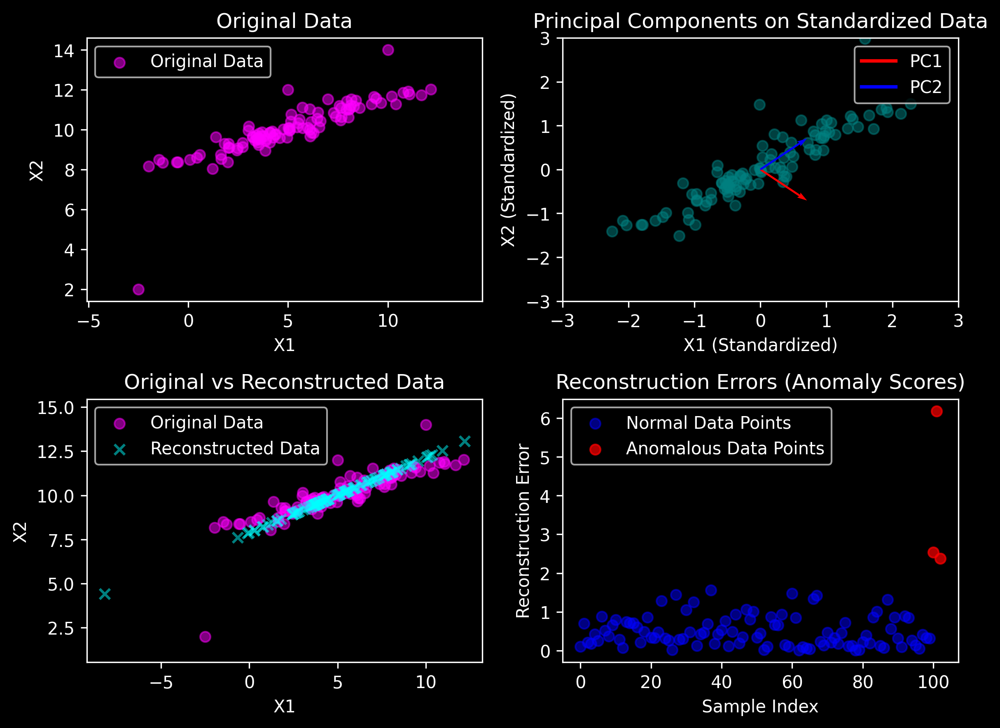

PCA-based Reconstruction#
PCA using the Correlation Matrix
Standardization:
\[ X_{\text{standardized}} = \frac{X - \mu}{\sigma} \]Sample Correlation Matrix:
\[ R = \frac{1}{n-1} X_{\text{standardized}}^T X_{\text{standardized}} \]Eigenvalue Decomposition:
\[ R = V \Lambda V^T \]Projection:
\[ Z = X_{\text{standardized}} \cdot V \]Reconstruction:
\[ X_{\text{reconstructed}} = Z \cdot V^T \cdot D + \mu \]
Key Point:
Use \(n-1\) for unbiased estimation in the correlation matrix (Bessle’s Correction).
import numpy as np
import matplotlib.pyplot as plt
from matplotlib.lines import Line2D
# Data Generation
np.random.seed(47)
plt.style.use('dark_background')
mean = np.array([5, 10])
cov = np.array([[10, 3], [3, 1]])
n = 100
X = np.random.multivariate_normal(mean, cov, size=n)
# Adding anomalies
anomalies = np.array([[5, 12], [-2.5, 2], [10, 14]])
X = np.vstack([X, anomalies])
n = X.shape[0]
# Standardizing the data
X_mean = np.mean(X, axis=0)
X_std = np.std(X, axis=0)
X_standardized = (X - X_mean) / X_std
# Covariance matrix and PCA
R = X_standardized.T @ X_standardized / (n - 1)
eigenvalues, eigenvectors = np.linalg.eigh(R)
sorted_indices = np.argsort(eigenvalues)[::-1]
eigenvalues = eigenvalues[sorted_indices]
eigenvectors = eigenvectors[:, sorted_indices]
# Projecting and reconstructing
Z = X_standardized @ eigenvectors[:, :1]
D = np.diag(X_std)
X_reconstructed = (
Z @ eigenvectors[:, :1].T @ D + X_mean
)
# Reconstruction errors
reconstruction_errors = np.linalg.norm(X - X_reconstructed, ord=2, axis=1)
threshold = np.percentile(reconstruction_errors, 95) # Threshold for anomaly detection (95th percentile)
# Step 6: Print original and reconstructed data samples
print("\nOriginal Data (first 5 samples):\n", X[:5])
print("\nReconstructed Data (first 5 samples):\n", X_reconstructed[:5])
Original Data (first 5 samples):
[[ 7.56602935 11.19005407]
[ 2.02233349 9.30102911]
[ 8.17635236 11.53044291]
[ 8.12921555 11.20800311]
[ 5.98339063 10.11031892]]
Reconstructed Data (first 5 samples):
[[ 7.6611491 11.14965863]
[ 2.66524339 9.02799825]
[ 8.36706998 11.44944899]
[ 7.96387464 11.27822006]
[ 5.59859543 10.27373369]]
# Visualizations
plt.figure(figsize=(8, 6), dpi=300)
# Plot-1: Original Data
plt.subplot(2, 2, 1)
plt.scatter(X[:, 0], X[:, 1], alpha=0.5, label="Original Data", color='magenta')
plt.title("Original Data")
plt.xlabel("X1")
plt.ylabel("X2")
plt.axis("equal")
plt.legend()
# Plot-2: Principal Components on Standardized Data
plt.subplot(2, 2, 2)
plt.scatter(X_standardized[:, 0], X_standardized[:, 1], alpha=0.5, label="Standardized Data", color='teal')
origin = np.zeros((2, 2)) # Two origins, one for each eigenvector
plt.quiver(
origin[:, 0], origin[:, 1], # Origin points
eigenvectors[:, 0], eigenvectors[:, 1], # Eigenvector components
angles='xy', scale_units='xy', scale=1, color=['r', 'b'], width=0.005
)
plt.xlim(-3, 3)
plt.ylim(-3, 3)
plt.title("Principal Components on Standardized Data")
plt.xlabel("X1 (Standardized)")
plt.ylabel("X2 (Standardized)")
# Create custom legend handles for arrows
legend_elements = [Line2D([0], [0], color='r', lw=2, label='PC1'),
Line2D([0], [0], color='b', lw=2, label='PC2')]
plt.legend(handles=legend_elements)
# Plot-3: Original vs Reconstructed Data
plt.subplot(2, 2, 3)
plt.scatter(X[:, 0], X[:, 1], alpha=0.5, label="Original Data", color='magenta')
plt.scatter(X_reconstructed[:, 0], X_reconstructed[:, 1], alpha=0.5, label="Reconstructed Data", marker='x', color='cyan')
plt.title("Original vs Reconstructed Data")
plt.xlabel("X1")
plt.ylabel("X2")
plt.axis("equal")
plt.legend()
# Plot-4: Reconstruction Errors and Highlight Anomalies
plt.subplot(2, 2, 4)
plt.scatter(np.arange(len(reconstruction_errors))[:-3], reconstruction_errors[:-3],
color='blue', alpha=0.5, label="Normal Data Points")
plt.scatter(np.arange(len(reconstruction_errors))[-3:], reconstruction_errors[-3:],
color='red', alpha=0.7, label="Anomalous Data Points")
plt.title("Reconstruction Errors (Anomaly Scores)")
plt.xlabel("Sample Index")
plt.ylabel("Reconstruction Error")
plt.legend()
plt.tight_layout()
plt.show()
